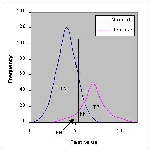

Roc Curve Prt1
جمعه ۲۰ تیر ۱۳۹۹
۲ دقیقه مطالعه
– title: مقدمه ای بر منحنی ROC بخش اول data : 2020-07-10 –
مقدمه ای بر منحنی ROC
دو معیار «حساسیت-sensitivity» و «مشخصات-specifivity» برای یک آزمایش تشخیصی، تنها وابسته به «کیفیت» آن آزمایش نیست بلکه در علوم پزشکی مفهومی دیگر نیز به نام « تست غیر طبیعی-abnormal test» نیز وجود دارد که باید آن را در نظر گرفت . به نمودار ایده آل نگاه کنید. این نمودار تعداد افراد بیمار و سالم را نشان می دهد. این نمودار با توجه به مقدار عددی که از آزمایش تشخیصی بدست آمده، تشکیل شده است.

درست همانند اکثر تست ها، این تست نیز بین فرد سالم با بیمار با دقت 100 درصد، تمایز قائل نشده است. این دو توزیع همپوشانی دارند. ناحیه ی همپوشانی مشخص کننده ی جایی است که آزمون نمیتواند بین فرد مبتلا و سالم تمایز قائل شود.
موقعیت این برش-cutpoint تعداد مثبت صحیح، منفی صحیح، مثبت غلط و منفی غلط را تعیین می کند. در موقعیت های مختلف پزشکی ما به برش-cutpoint های مختلفی ممکن است نیاز داشته باشیم اگر که ما امید داشته باشیم تا یکی از خطاهای آزمون را کاهش دهیم.
ما می توانیم از داده های که در رابطه با کم کاری غده ی تیروئید از بخش نسبت درستنمایی است برای به تصویر کشیدن اینکه چطور تغییرات حساسیت و مشخصات به انتخاب سطح T4 که کم کاری غده تیروئید را تعریف می کند، وابسته است، استفاده کنیم.داده ها توسط Goldstein و Mushlin گزارش شده است«J Gen Intern Med 1987;2:20-24.» . این داده ها گزارش شده از بیماران مشکوک به کم کاری غده ی تیروئید است. داده بر روی مقادیر T4 در افراد با کم کاری تیروئید و افراد با تیروئید عادی به شکل گرافیکی در پایین آمده است.

نمودار بالا به شکل جدول زیر ساده شده است.
| ستون 1 | ستون 2 | ستون 3 |
|---|---|---|
| T4 value | Hypothyroid | Euthyroid |
| 5 or less | 18 | 1 |
| 5.1 - 7 | 7 | 17 |
| 7.1 - 9 | 4 | 36 |
| 9 or more | 3 | 39 |
| Totals: | 32 | 93 |